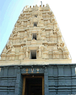
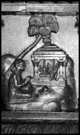
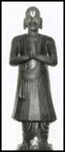
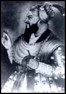
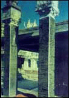

|
 |
|
|
 |
 |
 |
 |
|  |
History of temple |
| A sacred place that attracts
lakhs of devotees from all over the world, it is the abode
of Lord Rama (The seventh incarnation of SriMahavishnu). This
hill place which is encircled by holy river Godavari flowing
towards southern direction is the famous shrine Bhadrachalam-The
name derived from Bhadragiri (Mountain of Bhadra-a boon child
of Meru and Menaka). According to a Ithihasas, the significance
of this shrine dates back to the Ramayana Era. This coherent
hill place existed in "Dandakaranya" Of Ramayana period where
Rama with his consort Sita and brother Laxmana had spent their
vanavasa- and Parnashaala(the place connected to the famous
Golden Deer and the place from where Sita was abducted by
Ravana.) is also in the vicinity of this temple site. It is
at this Mandir site that, long after Ramavatara, Bhagawan
Mahavishnu manifested Himself as Rama again to fulfil a promise
He made to His Bhakta Bhadra, who continued his Tapas through
Yugas, praying for the grace of the Bhagawan Sri Ramachandra
murthy. |
|
| Exigency of Incarnation |
| The history depicts that the need emerged
the incarnation of Vykuntha Rama was that to fulfill a long
desire of his ardent devotee Bhadra.
|
|
Maharshi Bhadra
|
| Bhadra performed penance at the bank
of river Godavari in this " Dandakaranya " to get
grace of lord Rama and in countenance of his beloved God -
The exulted "Rishi" implored Rama to be seated on
his head ,but Rama who was in search of his consort Sita gave
promise to his Bhakta that his desire would be fulfilled on
his way back , after finding Sita and accomplishing the process
of punishing the wicked Ravana and establish 'Dharma' . Thus
the sage had been in continuation of the frightened penance
as Rama could not accomplish the promise in Ramavatara . Then
Sri Mahavishnu manifested himself as Vykuntha Rama and rushed
to his devotee Bhadra , signaling hisarrival by blowing 'Shanku',accompanied
by his consort Sita and brother Laxmana , resembling that
of 'Gajendra Moksham ' - Thus , the moorthies of Rama ( having
four hands ) - Shanku on the right , Chakra at his left and
Dhanurbhana ( Bow and Arrow in the rest two hands ) , Sita
had condescended on the left lap of Rama and brother ( at
Rama's left ) are existed . And the hill place where the Deities
were seated on , was the head place of Bhadra - achalam (
hill ) ,thus this shrine was transformed into Bhadrachalam
. |
| |
| The idols
of Vykuntha Rama, Laxmana and Sita were found by Pokala Dhammakka.
Pokala Dhammakka, an ardent devotee of Rama lived in the 17th
century and was an inhabitant of Bhadrireddypalem, a mile away
from this holy place. On one fine night, she had darshan of Rama
in her dream who said "the saints and sages are worshiping my
embodied moorthy settled on Bhadragiri" and asked her to trace
them, perform pooja and attain salvation. On the very next day
morning she started searching for the idols-peeped into an ant-hill
and found the idols hidden in it. She poured hundreds of pots
of Godavari water on the ant-hill which tardily dissolved and
gave way for the appearance of the hidden Deities. Since then,
she used to perform pooja daily and offer 'naivedyam' with fruits
fallen from near palmyra tree and constructed a mandapam of thatch
hut with the help of local villagers. Bhagawan Rama told Dhammakka
that at a later date, one of his devotees would construct a Mandir
at this site. Dhammakka waited patiently for the devotee. The
devotee turned out to be Bhakta Ramadas. |
 |
|
|
|
|
Bhakta Ramadas and construction
of temple
|
|
Bhadrachalarama temple was constructed
by Kancharla Gopanna popularly known as Bhakta Ramadas in the year
1674 A.D. |
| |
|  |
Kancharla
Gopanna, popularly known as "Bhakta Ramdas", a fervent devotee
of Rama, was born to Linganna Murthy and Kamamba in Nelakondapalli
village of Khammamett Taluk in 17th century (1620 AD). He was
nephew of Akkannna, the administrative head in the court of Nawab
Abul Hussan shah known as 'Taneshah' of Golkonda (he was the last
ruler of Golconda before Aurangazeb captured it in 1687A.D.) and
was appointed by him as Tahsildar of 'Palvoncha Paragana'. Thus
he was discharging his official duties earnestly and collecting
revenues due to the Nawabs in continuation of daily preaches -Chanting
of 'Ramanama' and the feeding the poor at his house. Ramadasa,
who heard the news that the villagers of palvoncha paragana were
proceeding to witness a Jatara at Bhadrachalam , became curios
and he too visited Bhadrachalam. He found the deities in an amazing
appearance. Ramadas, then asked the villagers to contribute liberally
for the construction of the temple. After the contributions were
found to be insufficient, the villagers appealed him to spend
the revenue collections for the construction of the temple with
a promise to repay the amount after harvesting the crops. Accordingly,
Ramadas constructed the temple with an amount of Rs 6 Lakhs collected
from the land revenues with out the permission of the Nizam Nawab. |
|
| When the
temple reached to the nearing completion, he had a problem of
fixing 'Sudarshana Chakra' at the crest of the main temple. He
was deeply distressed and fell into sleep. On the same night,
Rama in his dream asked him to have a holy dip in river Godavari
where he will find that-accordingly. On the next day morning Gopanna
did so and found holy Sudarshana Chakra in the river with out
much difficulty. He presumed that Sudarshana Chakra itself was
shaped up with the divine power of his beloved God Rama. Soon
after the construction, his miseries started. He was dismissed
from service for mis-utilisation of revenue for constructing the
temple and was kept in jail for 12 long years in Golkonda Fort
and was tortured. Unable to withstand the miseries, Ramadas implored
Rama to relieve him by singing many praising and emotional songs
which got popularized from the stanzas of 'Dasaradhi Sathakam'
and 'Keertanas' of Bhakta Ramadasa. |
| |
| The Nizam
Nawab Tanishah, the then ruler of Nizam's territory became a devotee
of Rama who realised the devotion spirit of Ramadas after his
imprisonment and took over the charge of temple administration.
This resembles the communal harmony amongst the Hindus and Muslims.
The Nizam Nawab realised Ramadas'devotional spirit and dedication
towards Rama, when Rama and Laxmana repaid 6 lakh Mohurs exposing
themselves as Ramoji and Laxmoji, the servants of Bhakta Ramadas
to get release of their devotee from the imprisonment. Thanisha
gave voucher to these divine looking persons who approached him
at his house during late night. Then they kept the voucher under
the pillow of Gopanna where he was jailed. Tanishah who woke up
on the very next day morning realised that those divine looking
persons were none other than Rama and Laxmana and made arrangements
to get release of Gopanna and prayed to forgive him by placing
all the Gold Mohurs received last night at the feet of Gopanna.
But, he refused to take back those mohurs except two as a mark
of divine significance. (Those two can still be seen kept in Bhadrachala
Sri Sita Ramachandra Swamy vaari Devasthanam). |
 |
|
| |
|  |
Influenced
by the majesty of Lord Rama, Golkonda Ruler Tanishah earmarked
the income derived from the said Palwoncha paragana which came
to Rs 20,000 and odd for the maintenance of the temple which was
continued during Nizam's reign and offering Pearls (Mutyala Talambralu)
on the occasion of kalyana mahotsavam (Sri Rama Navami) to Deities
on an elephant through a specially sent messenger. That procedure
of sending pearls to the Deities is still followed by present
state Government and continues to offer during Sri Rama Navami
Festival (Kalyana mahotsavam). Tumu Narsimha Dasa,Tahasildar of
Palwoncha paragana,along with his associate Varada Ramadasa came
here from Guntur and took over the charge of Bhadrachalarama temple
after Ramadas made inscripted the performance of Nitya Poojas
and sevas right from early morning "Suprabhata Seva" till night
"Pavalimpu Seva" before closure of the temple as "Silaasaasanaalu"
on these two pillars. This inscription gives details of daily
dictum and daily rituals also. |
|
|
 |
 |
 |
 |
|
| Copyright © 2000-2017 Team Bhadrachalarama.Org All Rights Reserved |
|
|